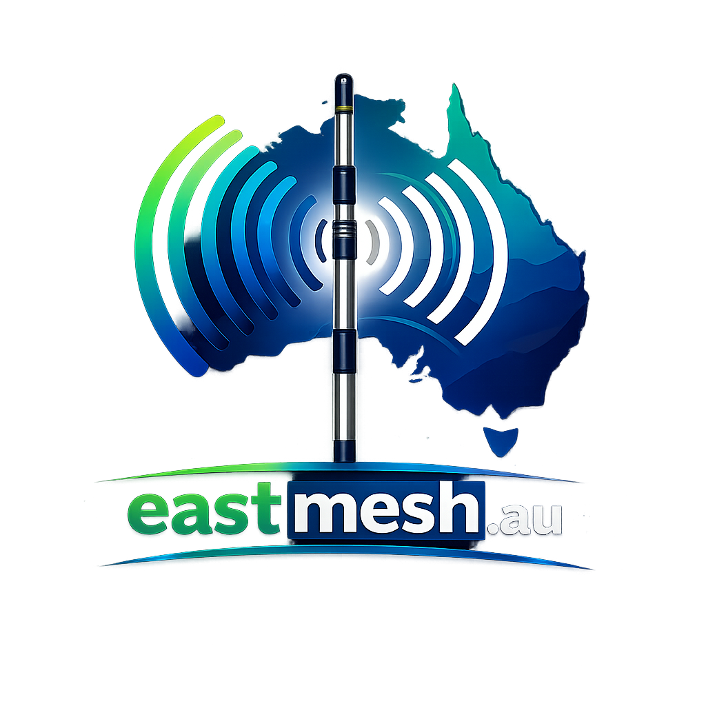

eastmesh.au
The identity
EastMesh is a community-built Australian MeshCore / LoRa network. The look is technical but calm: a dark graphite canvas, a living green signal, and cool blue network structure. Use the system consistently across websites, maps, documentation, physical promotion, and CYD firmware.
Core palette
#222222#303030#343434#36A167#1E3A5F#06B6D4#B7F21D#E6EAF0 / #FFFFFFType & components
Readable technical work
Inter is the default face. Keep the hierarchy clear, use sentence case for headings, and reserve uppercase tracking for labels.
Primary actionSecondaryNetwork online
Firmware / data style
STATE online
RSSI -71 dBm
ROUTE eastmesh.au
Use solid fills and status labels on small displays.
Use it well
Do
Keep green meaningful, pair radio/map geometry with simple copy, use graphite as the default product signature, and keep the logo clear.
Don't
Don't turn every heading green, add arbitrary logo colours, use cyberpunk type, or rely on colour alone for device state.
Implementation files
../DESIGN.md is the normative guide. Use tokens.css for web projects and tokens.json for tooling. This page is intentionally printable from a browser.